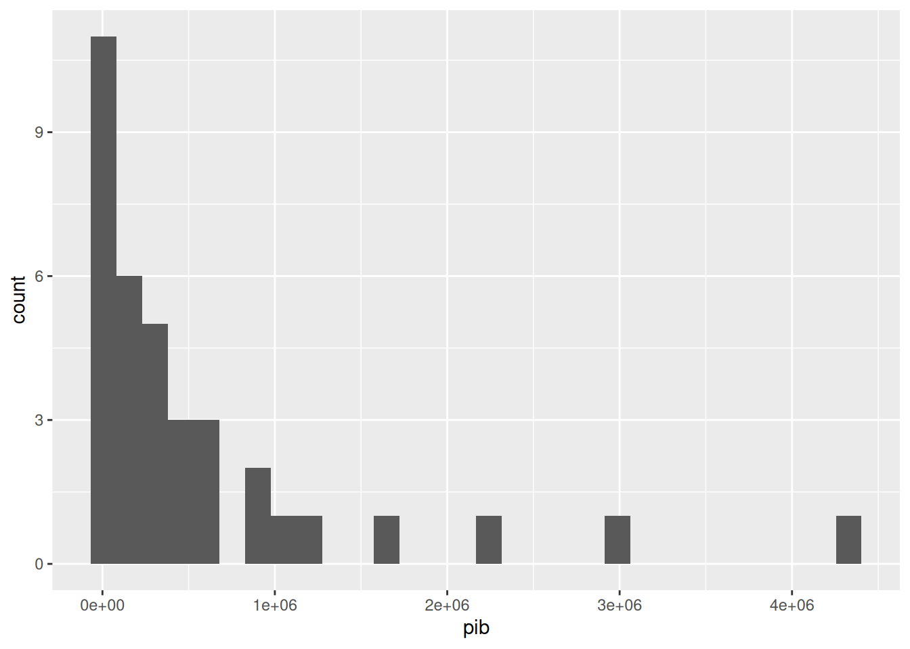
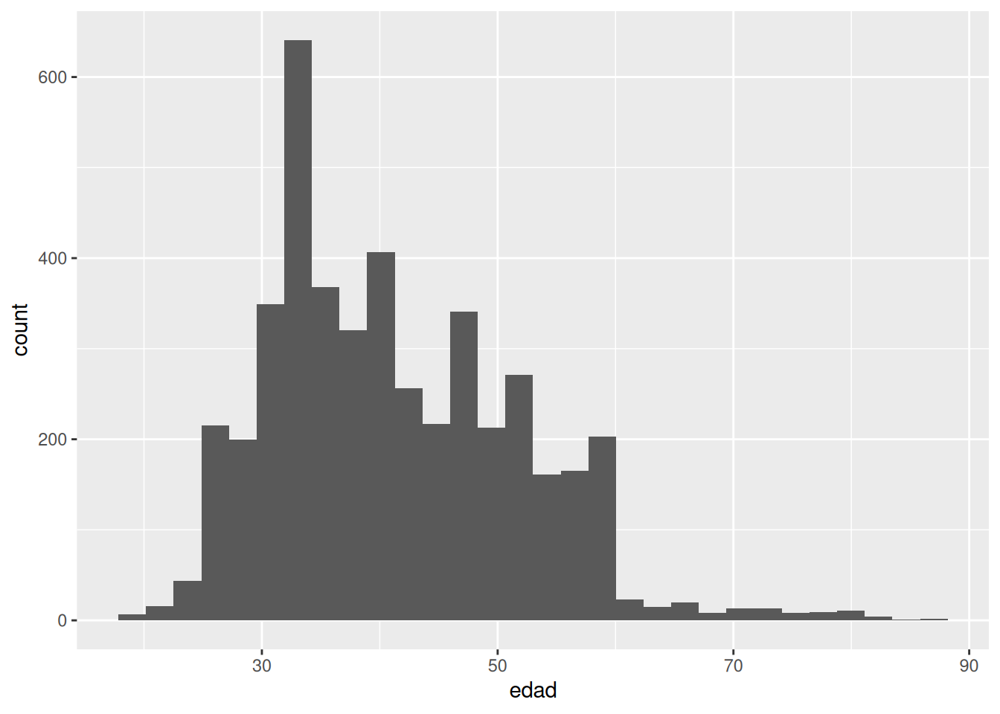
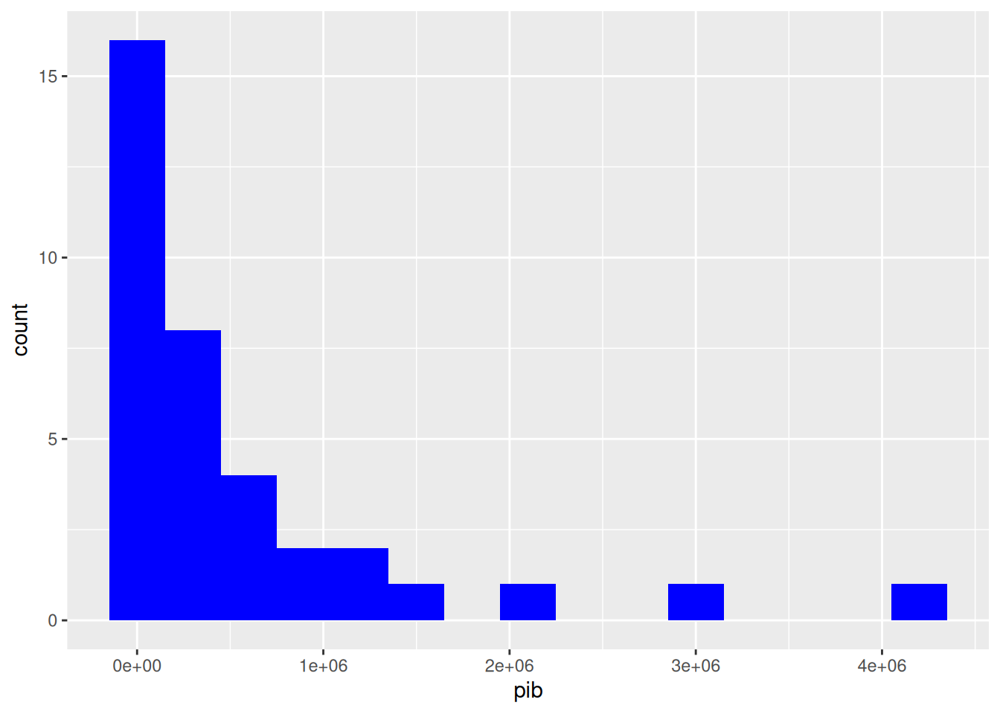
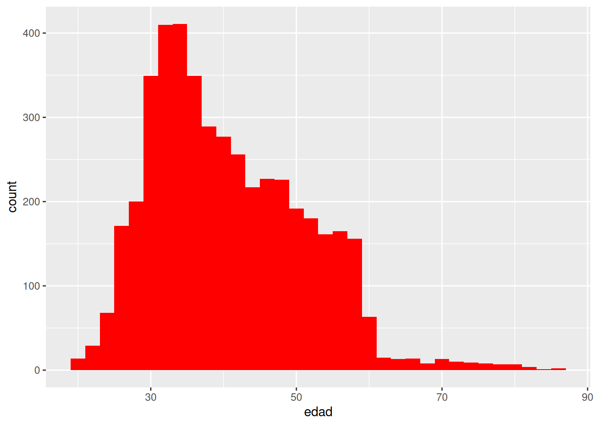
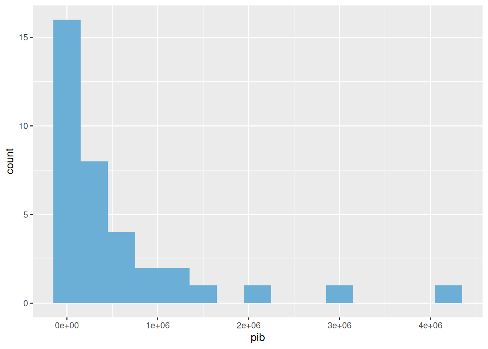
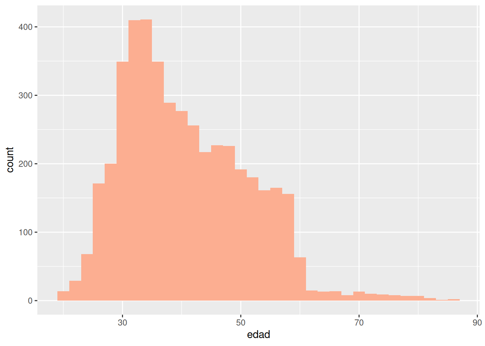
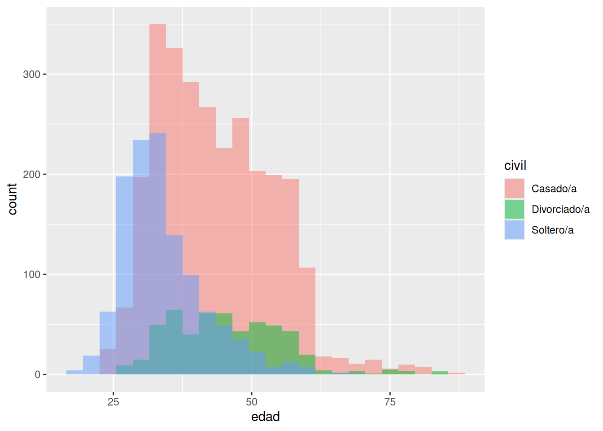

Chapter 5 Representación de histogramas
Podemos representar también los PIBs de datos_econ y las edades de datos_mkt en un histograma. Para ello, seguimos el mismo principio de antes pero solo necesitamos una variable (el PIB o la edad):
## `stat_bin()` using `bins = 30`. Pick better value `binwidth`.
## `stat_bin()` using `bins = 30`. Pick better value `binwidth`.
La anchura de las barras que forman el histograma pueden ajustarse, y los títulos de los ejes se pueden cambiar de la misma forma que en el ejemplo anterior. Además, podemos darle color.histograma_econ <- ggplot(datos_econ, aes(x = pib)) + geom_histogram(binwidth = 300000, fill = "blue")
histograma_econ
histograma_mkt <- ggplot(datos_mkt, aes(x = edad)) + geom_histogram(binwidth = 2, fill = "red")
histograma_mkt
Si queremos una paleta de colores más profesional, podemos usar el paquete RColorBrewer:
# install.packages("RColorBrewer")
library(RColorBrewer)
# display.brewer.all() # Muestra los colores disponiblesPara aplicar RColorBrewer podemos:
histograma_econ <- ggplot(datos_econ, aes(x = pib)) +
geom_histogram(binwidth = 300000, fill = brewer.pal(5, "Blues")[3])
# brewer.pal(n, name): n es el número de colores en la paleta y name es el nombre de la paleta, que puede consultarse en https://r-graph-gallery.com/38-rcolorbrewers-palettes.html. El [] posterior extrae el tercer color de la paleta.
histograma_econ
histograma_mkt <- ggplot(datos_mkt, aes(x = edad)) +
geom_histogram(binwidth = 2, fill = brewer.pal(5, "Reds")[2])
# brewer.pal(n, name): n es el número de colores en la paleta y name es el nombre de la paleta, que puede consultarse en https://r-graph-gallery.com/38-rcolorbrewers-palettes.html. El [] posterior extrae el tercer color de la paleta.
histograma_mkt
Podemos incluso superponer dos histogramas para observar si la distribución de la edad difiere entre el estado civil endatos_mkt.
ggplot(datos_mkt, aes(x = edad, fill = civil)) +
geom_histogram(alpha = 0.5, position = "identity", binwidth = 3)